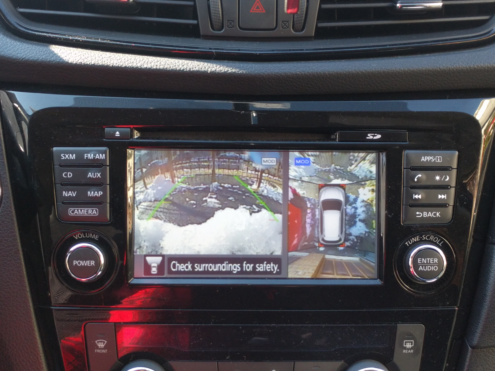
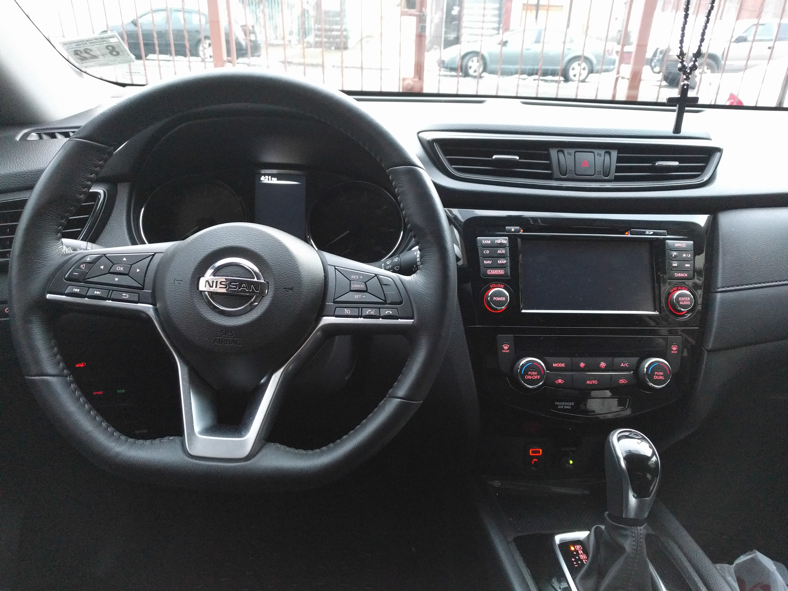

Inside, the Nissan Rouge boasts many great and interesting features!
Center Console
At the front, enjoy a nice display used for a wide range of things! This display is used to adjust various settings such as the radio, GPS navigation, or use it to interact with your wireless devices.
The front display at the center console is also used to the display the exterior cameras located on the front, right, left and rear sides of the car.

Another interesting feature is found underneath the dashboard. Located here is a switch that enables the car to change between drivetrains. This car is able to change between all-wheel drive or two-wheel drive. Allowing drivers, either stuck in snow, parked on a hill, or in need of more speed, to fully utilize the power of the Rogue and drive through any obstacle.
The Trunk

Got a lot of stuff? Hide your stuff within other stuff!
The Nissan Rogue boasts a large cargo space for all your stuff. Get messy and place all your belongings anywhere with selves. Or you can hide them all underneath and make extra space for more stuff!